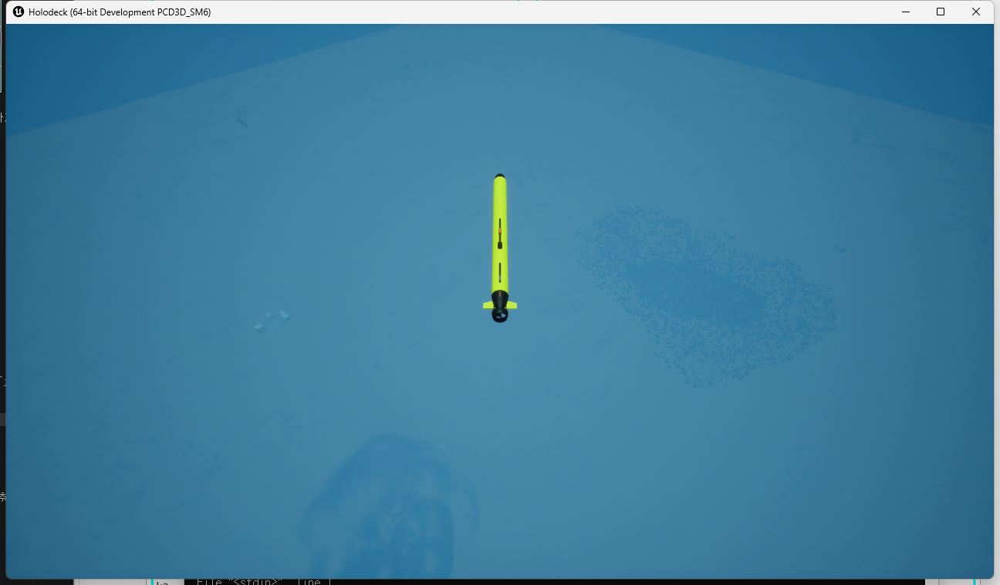
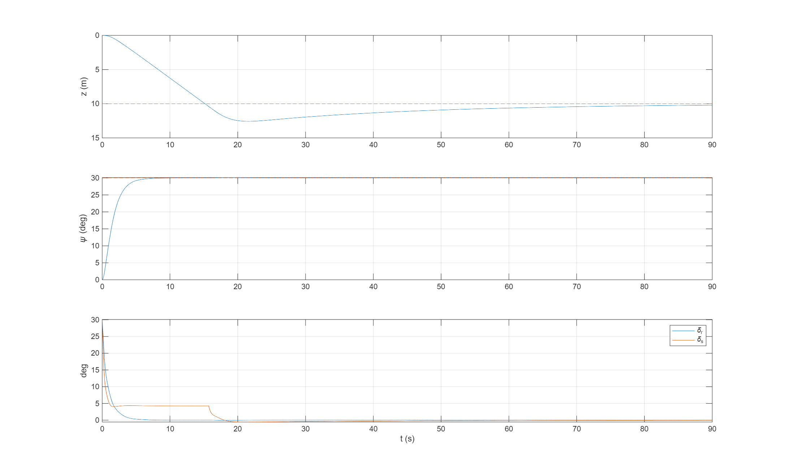
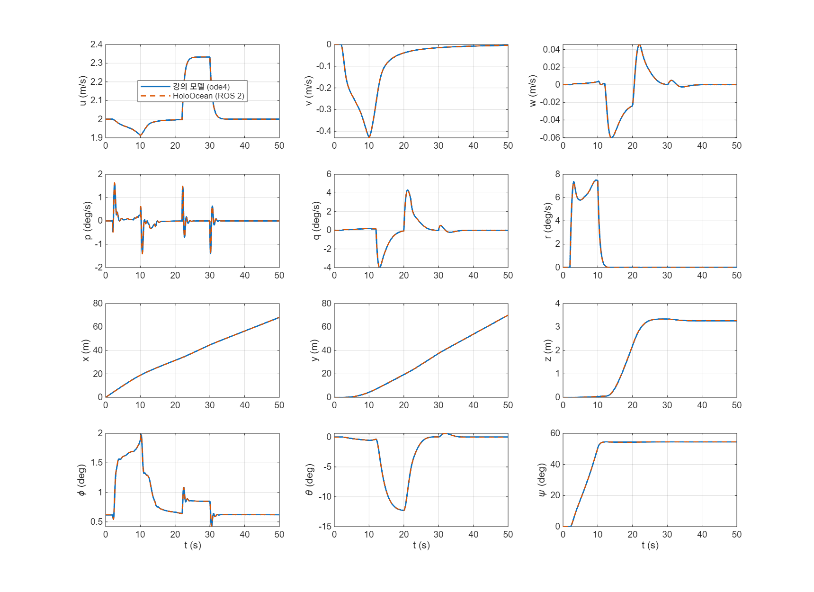

2026-09-27
한일 / What I did
HoloOcean 2.3.0 위에 REMUS 100 AUV 시뮬레이션 환경을 세우고, 강의 Simulink 모델을 ROS 2로 붙여 돌리는 데까지 갔다.
동역학은 Unreal 물리가 아니라 MSS 최신판 remus100.m 을 Python으로 옮긴 것이 계산하고, 결과는 강의 모델(ode4)과 최악 0.34 % 로 겹친다.
가는 길에 HoloOcean 원본 코드의 좌표변환 버그(ω×v 누락) 를 찾아서 고쳤다 — 선회 시 최대 62 % 오차를 내던 것.
같은 날 앞선 세션에서 정한 것: Gazebo 제외 → 검증·강의 = HoloOcean 2.0 / RL 학습 = Isaac Lab(나중), 기준 모델 = MSS 최신판 remus100.m(commit 8bdf35a), 강의판·Python판과의 차이 6개 분해 완료 (C:\Archive\제어공학특론\validation\remus100_ref\RESULTS.md).
Plans
- HoloOcean 설치 (Epic Games 계정 연동 필요)
- 시뮬레이터 기본 사용법 익히기 — 대화형 Python으로 한 줄씩
- HoloOcean 기본 torpedo 모델을 MSS 최신판
remus100.m으로 교체 + 검증 (AC-3: RMS ≤ 2 %) - MATLAB/Simulink 제어기 연결 — ROS 2 bridge 방식으로 결정 (MATLAB Engine 직접 호출안 대신)
- 강의 모델
Remus100_Model.slx의 50 s 입력을 HoloOcean에서 돌려보기 - 강의 모델 사본의 plant를 HoloOcean으로 교체
결과 / Results
1. 설치 — C:\sim\holoocean
| 항목 | 값 |
|---|---|
| 버전 | HoloOcean 2.3.0 (저장소 byu-holoocean/HoloOcean, branch release, --depth 1) |
| 위치 | C:\sim\holoocean — ASCII 경로. 사용자 홈 C:\Users\전유식 의 한글이 Unreal 바이너리에서 문제 될 수 있어서 피함 |
| Python | uv venv C:\sim\holoocean\.venv (Python 3.11.16) + numpy/scipy/matplotlib/opencv |
| 월드 | Ocean 패키지 5.27 GB zip → C:\sim\holoocean\worlds\2.3.0\worlds\Ocean (5.8 GB) |
| 환경변수 | 사용자 환경변수 HOLODECKPATH=C:\sim\holoocean\worlds (월드 설치·탐색 위치) |
| GPU | RTX 4070 12 GB, D3D12 SM6, driver 610.88 |
| 속도 | headless 실시간 3.3배(167 step/s @50 Hz), 렌더링 3.2배 |

2. HoloOcean은 “Python 라이브러리”다 — Gazebo와 다른 점
- 시뮬레이터를 먼저 켜는 게 아니라
python 스크립트.py가 Unreal을 띄우고, 스크립트가 끝나면 같이 꺼진다 env.tick()/env.step(cmd)를 부를 때만 시간이 흐른다 (lockstep). 안 부르면 Unreal 창이 얼어 “응답 없음” 이 된다 → 고장 아님- 월드 정의 = scenario (JSON 또는 dict): 맵 + agent + 센서 + 초기 위치. 기본 scenario 20개가
worlds\...\Ocean\*.json - 센서값은
statedict로 돌아온다. 센서 주기는 tick 주기의 약수여야 함 (DVL 20 Hz @ 30 tick → 30으로 반올림 경고) - GPS는 수심 1 m보다 얕을 때만 값이 나오고, 값이 없는 틱엔 key 자체가 빠진다
PoseSensor= 4×4 동차변환. OpenWater-Torpedo 기본값은 yaw 130°, 수심 292 m
3. MSS 최신판 동역학 이식 + 3단 검증 — C:\Archive\제어공학특론\holoocean_env\
| 단계 | 무엇 | 결과 |
|---|---|---|
| L1 | Python 이식 vs MATLAB, 둘 다 RK4 dt = 0.01 | 최대 오차 5e-13 |
| L2 | Unreal 적분 방식(world 가속도 + semi-implicit Euler) 오프라인 흉내 — 원본 변환 | S2 러더 계단 62.5 % 불합격 |
| L2 | 같은 흉내 — 수정 변환, 50 Hz | 최악 0.69 %, 48/48 통과 |
| L3 | 실제 HoloOcean, 50 Hz | 최악 ψ 0.69 %, 48/48 통과 |
| L3 | 실제 HoloOcean, 100 Hz | 최악 0.29 %, 48/48 통과 |
- 시나리오: S0 순항 유지 / S1 정지→1525 rpm / S2 순항에서 러더 +5° / S3 순항에서 수평타 +5° (60 s)
- L3 = L2 예측과 소수점까지 같고, 주기를 절반으로 하면 오차도 절반 → 남은 오차는 Unreal 1차 적분뿐
- 지표 보완:
RMS / max(변화 폭, 하한). 하한 = 0.1 m/s · 1°/s · 1 m · 1°. 거의 안 움직이는 신호에서 %가 폭주하던 문제 해결 (metrics.py)
4. Simulink ↔ HoloOcean, ROS 2 lockstep
[Simulink] Subscribe(/remus100/state) → Gate → Step[Controller → Publish(/remus100/cmd)]
▲ state_k = [k t u v w p q r x y z φ θ ψ] ▼ cmd_k = [k δr δs n]
[holo_ros2_node.py] cmd_k 받을 때까지 정지 → MSS 가속도 → HoloOcean tick → state_{k+1}
- Python 쪽 ROS 2 = RoboStack ROS 2 Jazzy (pixi),
C:\sim\ros2_jazzy. MATLAB R2025b 내장 ROS 2도 Jazzy (rclcpp 28.1.3, rclpy 없음) → distro 일치 - R2025b ROS 2 Subscribe 블록엔 blocking 모드가 없다 → Simulink는 최대 속도로 돌고,
Gate가 “새 메시지 && k 변화” 일 때만 Enabled Subsystem 실행 - mode 0 (S2 러더 계단): L3와 소수점까지 동일(0.69 %) → ROS 2·Simulink 경유 추가 오차 0. 3001 스텝 누락 0 · 중복 0, 실시간 2.8배
- mode 1 (예제 depth 10 m / heading 30°, 게인 미튜닝): ψ 5 s 수렴, z 2.5 m 오버슈트 후 10.2 m

5. 강의 모델 입력을 HoloOcean에서 — 그리고 사본
강의 실습자료\Remus_practice\Remus100_Model.slx (이미 MSS 최신판 remus100 을 부르도록 바뀐 판) 의 입력:
Signal Builder S(t)=1 (2≤t<10) → δr = 10°·S(t), δs = 5°·S(t−10), n = 트림 1200.8 + 200·S(t−20) rpm. 초기 상태 trim_u_2mps.mat (u = 2 m/s, φ = 0.0108 rad). 50 s, ode4, Ts 0.01.
- 먼저 폐루프 모델의 제어기에 같은 입력을 코드로 재현(mode 2) → 원본 대비 최악 0.34 %
- 그다음 강의 모델 사본
holoocean_env\simulink\Remus100_Model_holo.slx를 만들어 plant(remus100함수 + Integrator)만HoloOceanPlantMATLAB System 블록으로 교체 → 같은 0.34 %, 2501 스텝, 실시간 2.2배 - 원본 파일은 저장 안 함 (수정 시각 20:54 그대로 확인)

| 구간 | 명령 | 반응 |
|---|---|---|
| 2~10 s | δr = 10° | r ≈ 7°/s, ψ → 54° |
| 12~20 s | δs = 5° | θ ≈ −12°, z → 3.3 m |
| 22~30 s | +200 rpm | u 2.0 → 2.33 m/s |
막힌 것 / Blockers
HoloOcean 저장소가 404
비공개 저장소라 GitHub ↔ Epic Games 계정 연동이 필요. 연동 후에도 404 → gh api user/memberships/orgs 로 보니 EpicGames 조직 초대가 pending. gh api -X PATCH user/memberships/orgs/EpicGames -f state=active 로 수락하자 바로 접근됨.
클론이 13 GB까지 불어남
HoloOcean 저장소는 EpicGames/UnrealEngine 의 fork 라서 gh repo clone 이 upstream remote를 자동 추가하고 Unreal Engine 전체 이력을 fetch하고 있었다. 프로세스 명령줄을 보고 발견 → 강제 종료 → git remote remove upstream → .git 614 MB. 설치 스크립트는 git clone --depth 1 로 교체.
첫 실행 Timed out waiting for binary to load
첫 실행은 셰이더/PSO 캐시를 만드느라 100 s 대기 한도를 넘김. 바이너리를 직접 띄워 로그(Holodeck\Saved\Logs\HolodeckLog.txt)를 보니 6 s 만에 정상 기동 → 재실행하면 됨.
대화형 Python에서 창이 얼고 마우스가 사라짐
① lockstep이라 tick을 안 부르면 Unreal이 Windows 메시지를 처리 못 함 ② Unreal이 게임처럼 마우스를 잡음. 실제로 루프를 돌렸는데도 안 된다고 해서 확인해보니 — Unreal CPU 시간이 거의 안 늘었고, py-spy dump 로 REPL이 idle, 뒤 PowerShell에 File "<stdin>" 트레이스백 → 입력한 줄이 에러가 나서 env.step 이 한 번도 안 불린 것. 별도 인스턴스로 틱을 돌리면 Responding=True + 정상 렌더링 확인.
HoloOcean 원본 좌표변환 버그 — ω × v 누락 ⭐
Fossen 식의 ν̇ 는 회전하는 body frame 기준 속도의 미분. Unreal(TorpedoAUV.cpp)은 받은 값을 AddForce(.., bAccelChange=true) 로 world 가속도로 그대로 적분한다. 그러면 넘겨야 할 값은
a_world = R (ν̇ + ω × v) ← Transport Theorem
인데 원본 FossenInterface 는 R ν̇ 만 넘긴다. 직진(ω≈0)에선 티가 안 나고 선회에서 궤적이 틀어진다 (러더 계단 최대 62.5 %). holo_bridge.accel_command() 에 수송 항을 넣어 해결. → Transport Theorem
참고로 custom dynamics 모드에서 Unreal은 중력·부력·감쇠를 따로 걸지 않는다 (C++에서 확인) — Python이 준 가속도만 적분.
python.exe 직접 실행 시 AMENT_PREFIX_PATH is not set
pixi 환경은 활성화해야 ROS 2 환경변수가 잡힌다. MATLAB에서 노드를 띄울 때 pixi run --manifest-path C:\sim\ros2_jazzy\pixi.toml python ... 로 바꿈.
Simulink 모델 생성 스크립트의 함정 세 개
Blank Message블록은 파라미터entityType이 실제 메시지 타입.messageType만 바꾸면 기본geometry_msgs/Point가 남는다 (MATLAB Function에서 “필드 x,y,z 불일치” 오류로 드러남)- To Workspace(Array)의 벡터 신호가 14×N 으로 저장됨 → 열로 자르다가 오차 40만 % 가 찍힘.
squeeze+ 전치로 해결 - base workspace 변수
mode는 내장 함수mode를 가린다 →ctrl_mode로 개명
예제 제어기 러더 부호
MSS remus100: δr > 0 → Y_r < 0 → N = x_r·Y_r > 0 → ψ 증가. 처음에 반대로 써서 수정.
강의 모델이 Ts = 0.02 로 돌아감
run_holo_loop 가 base에 Ts = 0.02 를 남기는데, 강의 모델 PreLoadFcn은 Ts 가 이미 있으면 그대로 쓴다. 비교 스크립트 끝에서 Ts = 0.01 로 복구하도록 수정.
강의 모델 사본에 ROS 2 블록을 못 씀
강의 모델은 Signal Builder·Transport Delay가 Simulink 시계로 입력을 만든다 → Simulink 1 스텝 = HoloOcean 1 tick 이어야 함. Subscribe 블록은 새 메시지가 없으면 이전 값을 내고 넘어가서 시계가 앞서 달린다. 그래서 plant 자리에 MATLAB ros2 API로 “cmd_k 발행 → state_{k+1} 대기” 하는 System object (HoloOceanPlant.m) 를 만들어 넣음. 토픽·노드는 같다. Interpreted execution 전용 → 코드 생성 불가.
할일 / Next
- 강의 실습을 HoloOcean에서 재현 — 3강 trim(트림이 HoloOcean에서도 유지되는지), 4강 Part 1 제어기(
Remus_pitch_control_Nonlin.slx계열)를Remus100_Model_holo.slx또는remus100_holo_loop.slx의Step/Controller에 넣기 - 예제 depth 제어기 튜닝 (오버슈트 2.5 m) — 강의 제어기로 대체해도 됨
- MSS
cylinderDrag.m이 Reynolds 수에 기체 길이 L 을 씀(보통은 직경 D) — 버그인지 확인 (Fossen 교과서 3판 / MSS 이슈). 지금은 기준 일치가 목적이라 그대로 둠 - 강의
Remus100_Model.slx의 Transport Delay 버퍼 경고 (버퍼 1024 → 자동 2048) — 결과엔 영향 없음, 원본이라 손대지 않음 - 나중: 해류(
Vc,betaVc) 켜기, 구동기 지연·노이즈, Delphin2, Isaac Lab RL 학습 → HoloOcean에서 고전제어와 비교 - 아직 열려 있을 수 있는 것: 대화형 REPL에서 띄운 Holodeck 창(PID 21528) — 그 PowerShell에서
exit() - 태그: 볼트 태그 목록에
auv가 없어서 platform 태그를 비워둠 — 추가할지 결정